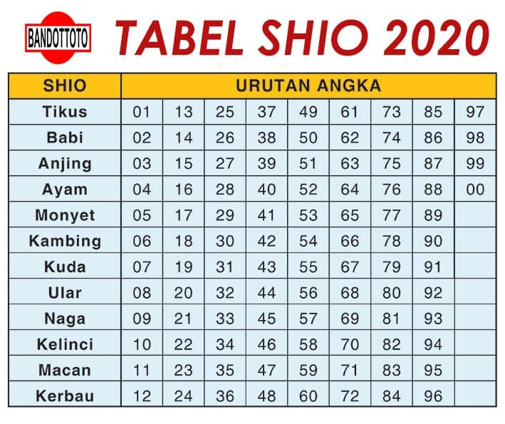

Welcome to 2
myrcrm – Permainan Judi Online Indonesia
2021.03.24 18:31
Skip to content
myrcrm
Permainan Judi Online Indonesia
HOME Blog Judi Online Hubungi Kami Tentang KamiPERMAINAN JUDI ONLINE
POKER | CASINO | ARCADE | TABLE GAME
SELENGKAPNYAKAMI MEMBERI YANG TERBAIK
KOMUNITAS
Menciptakan komunitas para pemain Judi Online Indonesia
KEPUASAN
Menyediakan permainan dengan kualitas terbaik
PENGETAHUAN
Memberi wawasan tentang permainan yang disediakan
PELAYANAN
Melayani keluhan dan pertanyaan seputar permainan
Apa saja permainan Judi Online
POKER ONLINE
Permainan game poker yang menyerupai permainan Texas Hold'em Poker dengan menawarkan bonus yang besar dan beraneka ragam. Menggunakan chip sebagai media permainan
ARCADE GAMES
Permainan Arcade Game merupakan permainan Mini-Games yang sering kita jumpai di perangkat console video games seperti balap kuda, pinball, balap anjing dan tembak ikan
Menggunakan koin sebagai media permainan
CASINO ONLINE
Permainan Casino Online umumnya sama seperti Casino darat. Meliputi Baccarat, Dragon Tiger, Roulette, Slot, SicBo, Bull Fight. Menggunakan koin sebagai media permainan
TABLE GAMES
Permainan Table Games merupakan permainan yang sering dimainkan dalam permainan Judi Darat dan termasuk casino darat, meliputi tebak gambar, kocok dadu, roulette, blackjack dan bakarat.
Menggunakan coin dan chip sebagai media permainan
HUBUNGI KAMI
Jika ada pertanyaan seputar dunia permainan Judi Online, Anda dapat segera menghubungi kami 24/7 setiap harinya
HUBUNGI SEKARANG Copyright © 2020 | MYRCRM | All Rights Reserved